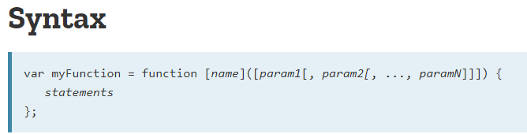
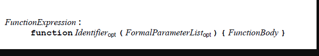

分享人：杨亚洲
目录
1.背景介绍
2.知识剖析
3.常见问题
4.解决方案
5.编码实战
6.扩展思考
7.参考文献
8.更多讨论
这是MDN上关于函数表达式的介绍
这是另一种函数表达式的介绍
既然知道了函数表达式和函数声明，那么如何区分他们？
如果没有函数名称，那么肯定不是函数声明方式。 区分带有函数名称的代码是函数声明还是函数表达式要通过它所在的上下文来判断： 如果代码作为一个运算数存在，那么它就是一个表达式方式，否则就是函数声明方式。
先看看他们之间的区别：
1、函数声明会被提升到当前作用域的顶部，函数表达式则不会。
2、函数声明一定会有函数名，而函数表达式一般不会有函数名。
3、函数声明不是一个完整的语句，所以不能出现在if-else,for循环，finally，try catch语句以及with语句中。 （ECMA规范只允许他们作为顶级语句，但是有的浏览器并不遵循这个规则。）
直接看demo
函数（变量）提升指的到底是什么？怎么解释这个东西
我讲过一次关于执行环境和作用域的小课堂。就拿全局执行环境来说的话，当我们打开网页的时候，全局执行环境创建， 这时候会创建这个执行环境的变量对象（活动对象），写好作用域链，并将this指向这个活动对象。
第二步，会扫描整个执行环境中的函数声明，以及var 变量声明。都会提升到当前执行环境的顶端，不过函数声明是完整的 var关键字只是声明变量，并未对其初始化。第三步：按顺序依次执行代码。
请看demo2
接着上面的话题，怎么判断一个函数是函数表达式还是函数声明
Dome3演示
函数声明一定会提升吗？一定会提升到当前作用域的顶部吗？
不一定，demo4
到底使用函数使用还是函数表达式？
dome4
感谢大家观看
BY : 杨亚洲